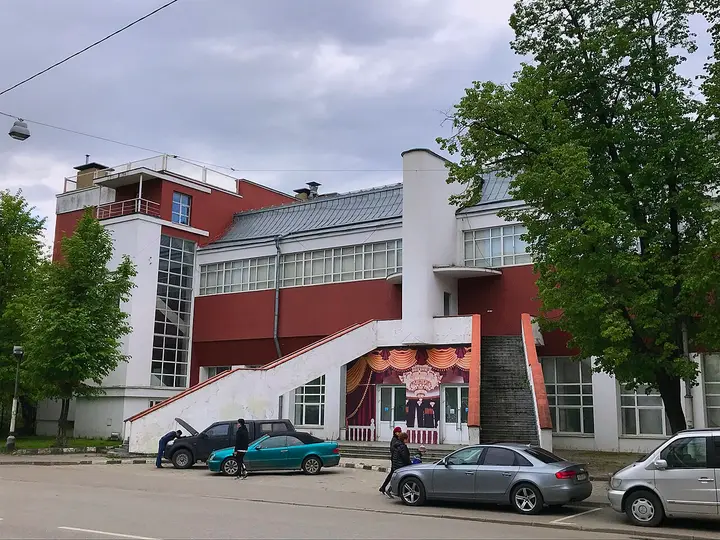
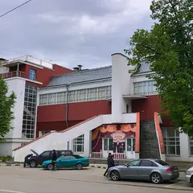

Фото: Yartsew, CC BY-SA 4.0 · Wikimedia Commons
Бильярд и ресторан · САО
Дом русского бильярда «Москва»
15 столов русского бильярда в здании Мельникова, ресторан и VIP-зоны. 12–00.
- ₽₽₽ · дороже 3 000 ₽ на человека
- в 1 плане
Позвать сюда: Дом русского бильярда «Москва»Открыть в каталоге: Дом русского бильярда «Москва»Маршрут до места: Дом русского бильярда «Москва»
Адрес и детали
- Адрес
- Вятская ул., 41А
Открыть на Яндекс Картах (в новой вкладке) - Метро
- м. Дмитровская
- Округ
- Север (САО)
- Цена
- дороже 3 000 ₽ на человека
- Проверено
- работает — проверили в октябре 2026
Планы с этим местом 1

- Дом русского бильярда «Москва» · Бильярд и ресторан · м. Дмитровская
- 16 минут пешкомOgorod · Ресторан
Пятнадцать столов русского бильярда в здании Мельникова, а потом ужин с коктейлями в Ogorod рядом с Хлебозаводом.
Открыть план: Русский бильярд в здании МельниковаПозвать сюда: Русский бильярд в здании Мельникова
Фото: Yartsew, CC BY-SA 4.0 · Wikimedia Commons
Похожие рядом
Что ещё рядом
Как позвать
- Выбери план, место или событие — в карточке адрес, цены и маршрут в Яндекс Картах.
- Нажми «Позвать сюда» — соберётся приглашение-игра для свидания или голосование для компании.
- Отправь ссылку в любой мессенджер: тебе ответят, а компания отметит, куда и когда может. Бесплатно и без регистрации.